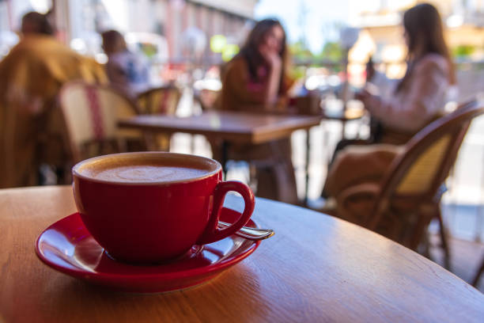
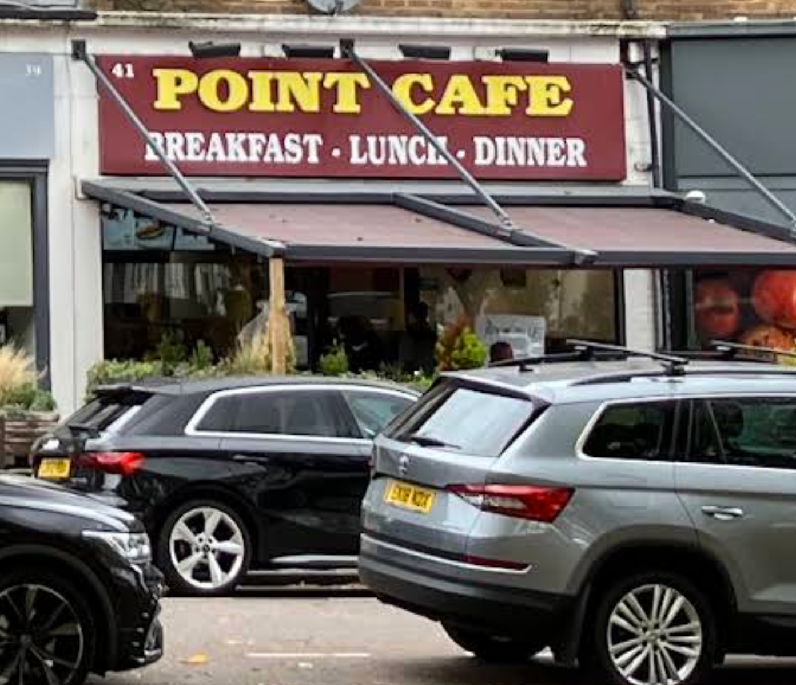
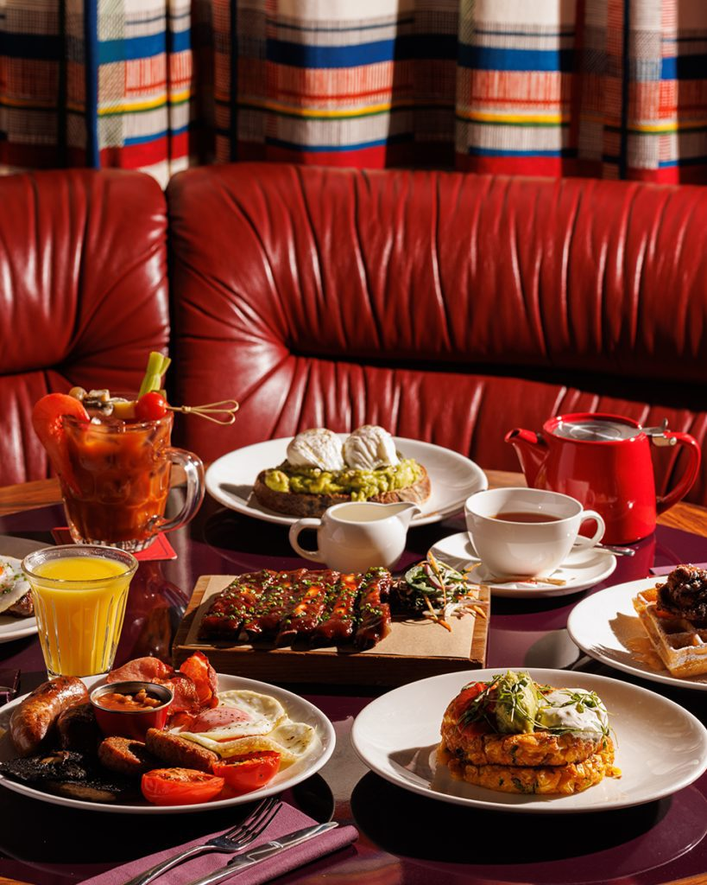
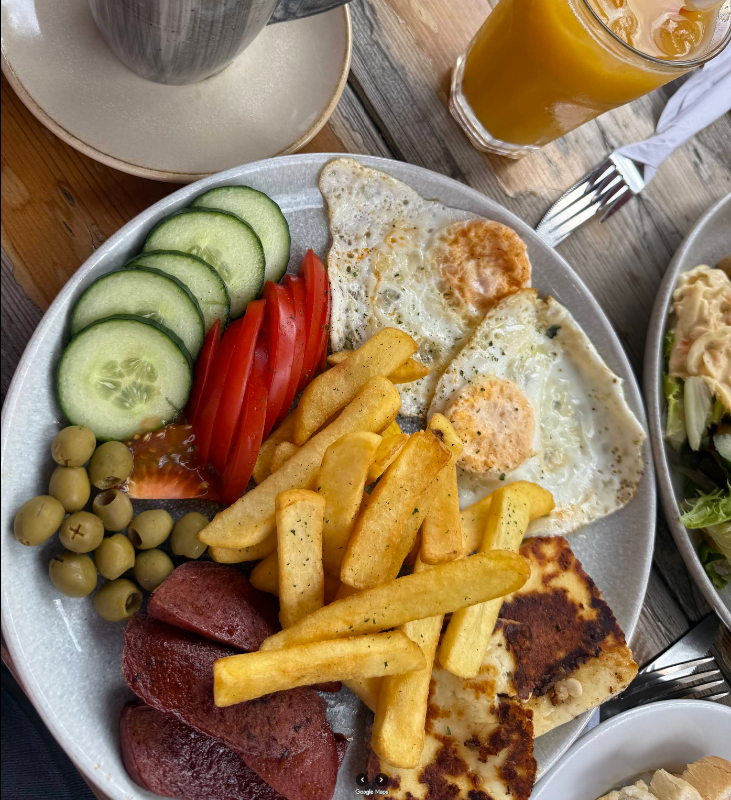
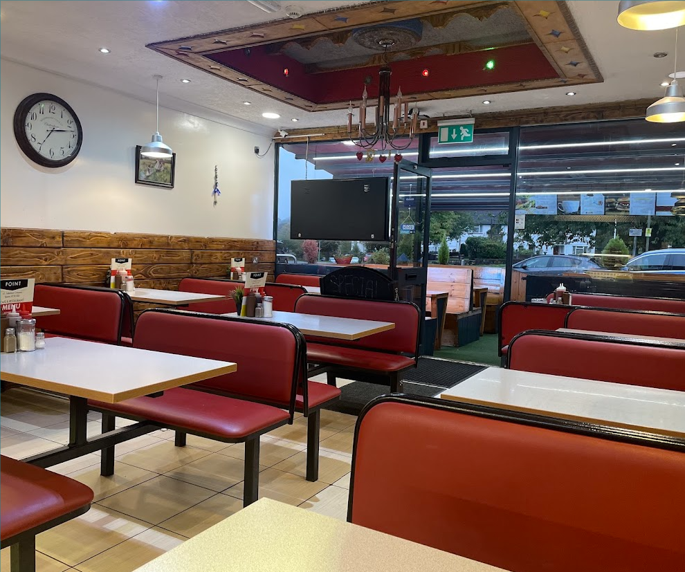

Full Breakfast
A hearty café breakfast — the classic way to start.
TATTENHAM CORNER · EPSOM DOWNS
A welcoming local café for generous breakfasts, relaxed lunches, great coffee and a proper catch-up.

Point Cafe sits at 41 Tattenham Crescent, right in the Tattenham Corner community. It is a family-run-style local café atmosphere with indoor and outdoor seating, breakfast, brunch and lunch options, takeaway and coffee.
Come in for a quick coffee, settle down for lunch, or make a morning of it. There’s room for groups, families and solo coffee stops.

Swap these placeholders for the best food and café photos from the Google Maps listing.



41 Tattenham Crescent
Epsom Downs, Surrey
KT18 5QJ